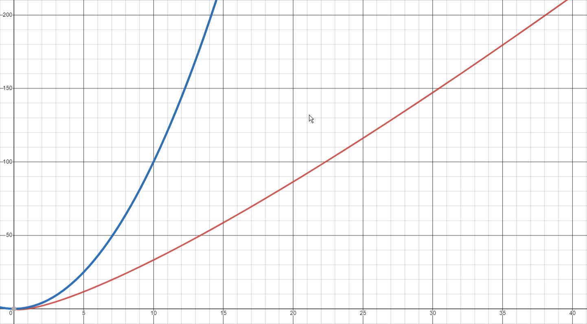

Аналитическая таблица
| Название | Средняя сложность | Худшая сложность | Дополнительная память | Иллюстрация |
| Сортировка пузырьком | O(N^2) | O(N^2) | O(1) | |
| Быстрая соритровка | O(N*log(N)) | O(N^2) | O(log(N)) / O(N^2) |  |
| Сортировка слиянием | O(N*log(N)) | O(N*log(N)) | O(N) |
Итог
На нашем сайте мы представили обширный набор информации о различных алгоритмах сортировки, включая пузырьковую сортировку, сортировку слиянием и быструю сортировку. Мы стремились предоставить полную и понятную информацию о том, как каждый из этих алгоритмов работает, в каких ситуациях их следует использовать и как оценивать их производительность.
Сортировка - это фундаментальная операция в информатике, и понимание различных методов сортировки может значительно облегчить жизнь разработчиков и программистов. Выбор наиболее подходящего алгоритма для конкретной задачи может существенно повысить производительность ваших программных проектов и сэкономить ресурсы компьютера.
Мы надеемся, что наш сайт помог вам углубить знания в области сортировок и обеспечил вас необходимой информацией и инструментами для успешного применения алгоритмов сортировки в ваших проектах. Независимо от вашего уровня опыта, сортировки всегда будут актуальной и важной темой в мире программирования, и мы надеемся, что наши ресурсы помогли вам лучше разобраться в этой теме.
Сообщить о себе